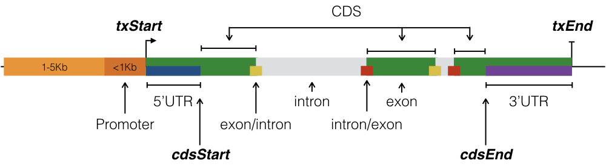

1 介绍
二代测序实验和生物信息学分析pipelines产生的基因组区域在注释基因组特征后更有意义。发生在exon或enhancer中的SNP可能比发生在基因间区域的SNP更受关注。可能有兴趣发现一种特殊的转录因子绝大多数与启动子结合，而另一种主要与3’UTR结合。含有CpG岛的启动子的高甲基化可能表明在一种情况下与另一种情况下不同的调控机制。
2 安装
source("https://bioconductor.org/biocLite.R")
biocLite("annotatr")3 注释
3.1 CpG注释
CpG岛是所有CpG注释的基础,并且由AnnotationHub包提供个物种的注释数据。
CpG shores位于CpG岛边界的上游/下游2kb
CpG shelves位于CpG shores边界的上游/下游2kb
其余的基因组区域构成了inter-CGI。 
3.2 基因注释
使用来自GenomicFeatures的函数和来自TxDb.*和org.*.eg.db包的数据进行基因注释
注释的区域包含TSS上游1-5Kb区域,启动子区域(<1Kb TSS上游),5’UTR区域,第一外显子区域,外显子区域,内含子区域,CDS,3’UTR和内部区域(内部区域不包括前面的注释列表中的区域),下图表示了GenomicFeatures函数中各注释区域间的关系
 基因注释中还包括了内含子和外显子边界区域(外显子和内含子200bp上/下游)。需要注意的是，这些边界与基因链有关。
3.3 FANTOM5 Permissive 增强子
根据Andersson等人的双向笼式转录定义.并从FANTOM5源下载和处理hg19和mm9。使用rtracklayer::liftOver()函数可以将增强子版本从h19提升到hg38,mm9到mm10.
3.4 GENCODE lncRNA 转录本
长非编码RNA(lncRNA)的注释来自GENCODE网站,有hg19,hg38,mm19.目前包含lncRNA的转录本信息,在以后计划包含lncRNA的内含子/外显子信息.
3.5 ChromHMM 染色质状态
由chromHMM(Ernst和Kellis(2012)确定的9个细胞系(Gm12878、H1hesc、Hepg2、Hmec、Hsmm、Huvec、K562、Nhek和Nhlf)染色质状态(hg19)可通过ucsc基因组浏览器轨迹访问.所有状态的注释都可以使用一个快捷方式（如hg19_Gm12878-chromatin）来构建，或者特定的染色质状态可以通过诸如hg19_chromatin_Gm12878-StrongEnhancer或hg19_chromatin_Gm12878-Repressed之类的代码来访问。
3.6 AnnotationHub注释
AnnotationHub包是AnnotationHub网页资源的客户端.AnnotationHub Web资源提供了一个中心位置，在那里可以发现基因组文件（如VCF、BED、WIG）和标准位置（如UCSC、ENSEMBL）的其他资源。资源包括每个资源的元数据，例如文本描述、标记和修改日期。客户机创建和管理用户检索到的文件的本地缓存，有助于快速和可复制的访问。
使用build_ah_annots()函数,可以将任何来源的GRanges对象转换为注释，以便在annotatr中使用。例如,创建一个Gm12878和H1-hesc细胞的H3K4me3 ChIP-seq peaks注释:
# Create a named vector for the AnnotationHub accession codes with desired names
h3k4me3_codes = c('Gm12878' = 'AH23256')
# Fetch ah_codes from AnnotationHub and create annotations annotatr understands
build_ah_annots(genome = 'hg19', ah_codes = h3k4me3_codes, annotation_class = 'H3K4me3')
# The annotations as they appear in annotatr_cache
ah_names = c('hg19_H3K4me3_Gm12878')
print(annotatr_cache$get('hg19_H3K4me3_Gm12878'))3.7 自定义注释
可以使用read_annotations()函数(使用rtracklayer::import()函数)从BED文件中加载注释信息.输出是包含mcols()(id,tx_id,gene_id,symbol,type)的GRanges对象,如果用户希望在其自定义注释中包含tx_id、gene_id和/或符号，则可以将它们作为额外的列包含在bed6输入文件中。
# Use ENCODE ChIP-seq peaks for EZH2 in GM12878
## These files contain chr, start, and end columns
ezh2_file = system.file('extdata', 'Gm12878_Ezh2_peak_annotations.txt.gz', package = 'annotatr')
## Custom annotation objects are given names of the form genome_custom_name
read_annotations(con = ezh2_file, genome = 'hg19', name = 'ezh2', format = 'bed')
print(annotatr_cache$get('hg19_custom_ezh2'))
##To see what is in the annotatr_cache environment, do the following:
print(annotatr_cache$list_env())4 使用方法
下面的例子是基于使用methylSig对两种条件下基因组区域的差异甲基化的测试结果。文件(inst/extdata/idh2mut_v_nbm_multi_data_chr9.txt.gz)包含染色体位置列，以及分类特征列和数字数据列，并提供了展示annotatr灵活性的良好示例。
4.1 读取基因组区域
read_regions()函数使用rtracklayer::import()读取BED文件,并转换成GRangs对象,extraCols可以将任意数量的分类和数字数据列附加到BED6文件中。rename_name和rename_score列允许用户为这些列提供更多描述性名称。
# This file in inst/extdata represents regions tested for differential
# methylation between two conditions. Additionally, there are columns
# reporting the p-value on the test for differential meth., the
# meth. difference between the two groups, and the group meth. rates.
dm_file = system.file('extdata', 'IDH2mut_v_NBM_multi_data_chr9.txt.gz', package = 'annotatr')
extraCols = c(diff_meth = 'numeric', mu0 = 'numeric', mu1 = 'numeric')
dm_regions = read_regions(con = dm_file, genome = 'hg19', extraCols = extraCols, format = 'bed',
rename_name = 'DM_status', rename_score = 'pval')
# Use less regions to speed things up
dm_regions = dm_regions[1:2000]
print(dm_regions)4.2 注释区域
用户可以选择builtin_annotations()列出注释信息,或者shortcuts或者使用自定义的注释信息。
hg19_basicgenesshortcut注释区域包含1-5Kb, promoters, 5’UTRs, exons, introns, and 3’UTRs区域.
hg19_cpgs shortcut注释区域包含CpG islands, CpG shores, CpG shelves, and inter-CGI区域.
其他基因组(builtin_genomes()列出的)shortcuts可以使用相同方式访问.
# Select annotations for intersection with regions
# Note inclusion of custom annotation, and use of shortcuts
annots = c('hg19_cpgs', 'hg19_basicgenes', 'hg19_genes_intergenic', 'hg19_genes_intronexonboundaries', 'hg19_custom_ezh2', 'hg19_H3K4me3_Gm12878')
# Build the annotations (a single GRanges object)
annotations = build_annotations(genome = 'hg19', annotations = annots)
# Intersect the regions we read in with the annotations
dm_annotated = annotate_regions(
regions = dm_regions,
annotations = annotations,
ignore.strand = TRUE,
quiet = FALSE)
# A GRanges object is returned
print(dm_annotated)
# The annotate_regions() function returns a GRanges, but it may be more convenient
# to manipulate a coerced data.frame. For example,
# Coerce to a data.frame
df_dm_annotated = data.frame(dm_annotated)
# See the GRanges column of dm_annotaed expanded
print(head(df_dm_annotated))
# Subset based on a gene symbol, in this case NOTCH1
notch1_subset = subset(df_dm_annotated, annot.symbol == 'NOTCH1')
print(head(notch1_subset))4.3 随机区域
给定一组带注释的区域，了解其如何与随机区域的注释进行比较是很重要的。
randomize_regions()函数是对regioneR包中regioneR::randomizeRegions()函数的包装,能基于给定的GRanges对象产生随机区域集.生产随机区域集后使用annotate_regions()进行注释.仅builtin_genomes()能在包装后的函数中使用,能操作注释后随机区域集的函数包括:summarize_annotations(),plot_annotation(),plot_categorical().
注意,randomize_regions()会忽略区域的特征,因此对于有特定特征的区域应该使用universe和regioneR::resampleRegions()
# Randomize the input regions
dm_random_regions = randomize_regions(
regions = dm_regions,
allow.overlaps = TRUE,
per.chromosome = TRUE)
# Annotate the random regions using the same annotations as above
# These will be used in later functions
dm_random_annotated = annotate_regions(
regions = dm_random_regions,
annotations = annotations,
ignore.strand = TRUE,
quiet = TRUE)
# Find the number of regions per annotation type
dm_annsum = summarize_annotations(
annotated_regions = dm_annotated,
quiet = TRUE)
print(dm_annsum)
# Find the number of regions per annotation type
# and the number of random regions per annotation type
dm_annsum_rnd = summarize_annotations(
annotated_regions = dm_annotated,
annotated_random = dm_random_annotated,
quiet = TRUE)
print(dm_annsum_rnd)
# Take the mean of the diff_meth column across all regions
# occurring in an annotation.
dm_numsum = summarize_numerical(
annotated_regions = dm_annotated,
by = c('annot.type', 'annot.id'),
over = c('diff_meth'),
quiet = TRUE)
print(dm_numsum)
# Count the occurrences of classifications in the DM_status
# column across the annotation types.
dm_catsum = summarize_categorical(
annotated_regions = dm_annotated,
by = c('annot.type', 'DM_status'),
quiet = TRUE)
print(dm_catsum)4.5 绘图
绘图函数返回的ggplot对象可使用print查看,ggsave保存,ggplot2修改code.
4.5.1 按每个注释类型画图
# View the number of regions per annotation. This function
# is useful when there is no classification or data
# associated with the regions.
annots_order = c(
'hg19_custom_ezh2',
'hg19_H3K4me3_Gm12878',
'hg19_genes_1to5kb',
'hg19_genes_promoters',
'hg19_genes_5UTRs',
'hg19_genes_exons',
'hg19_genes_intronexonboundaries',
'hg19_genes_introns',
'hg19_genes_3UTRs',
'hg19_genes_intergenic')
dm_vs_kg_annotations = plot_annotation(
annotated_regions = dm_annotated,
annotation_order = annots_order,
plot_title = '# of Sites Tested for DM annotated on chr9',
x_label = 'knownGene Annotations',
y_label = 'Count')
print(dm_vs_kg_annotations)
# View the number of regions per annotation and include the annotation
# of randomized regions
annots_order = c(
'hg19_custom_ezh2',
'hg19_H3K4me3_Gm12878',
'hg19_genes_1to5kb',
'hg19_genes_promoters',
'hg19_genes_5UTRs',
'hg19_genes_exons',
'hg19_genes_intronexonboundaries',
'hg19_genes_introns',
'hg19_genes_3UTRs',
'hg19_genes_intergenic')
dm_vs_kg_annotations_wrandom = plot_annotation(
annotated_regions = dm_annotated,
annotated_random = dm_random_annotated,
annotation_order = annots_order,
plot_title = 'Dist. of Sites Tested for DM (with rndm.)',
x_label = 'Annotations',
y_label = 'Count')
print(dm_vs_kg_annotations_wrandom)4.5.2 绘制注释中成对出现的区域
# View a heatmap of regions occurring in pairs of annotations
annots_order = c(
'hg19_custom_ezh2',
'hg19_H3K4me3_Gm12878',
'hg19_genes_promoters',
'hg19_genes_5UTRs',
'hg19_genes_exons',
'hg19_genes_introns',
'hg19_genes_3UTRs',
'hg19_genes_intergenic')
dm_vs_coannotations = plot_coannotations(
annotated_regions = dm_annotated,
annotation_order = annots_order,
axes_label = 'Annotations',
plot_title = 'Regions in Pairs of Annotations')
print(dm_vs_coannotations)4.5.3 绘制注释数字数据
对于数值数据，plot_numeric()函数在区域水平对所选分类变量进行绘制单个变量(柱状图)或两个变量(散点图)。有可能包括两个分类变量来进行面转换（见下文）。注意，当图是一个柱状图时，所有区域的分布都绘制在每个方面内。
dm_vs_regions_annot = plot_numerical(
annotated_regions = dm_annotated,
x = 'mu0',
facet = 'annot.type',
facet_order = c('hg19_genes_1to5kb','hg19_genes_promoters',
'hg19_genes_5UTRs','hg19_genes_3UTRs', 'hg19_custom_ezh2',
'hg19_genes_intergenic', 'hg19_cpg_islands'),
bin_width = 5,
plot_title = 'Group 0 Region Methylation In Genes',
x_label = 'Group 0')
print(dm_vs_regions_annot)
dm_vs_regions_annot2 = plot_numerical(
annotated_regions = dm_annotated,
x = 'diff_meth',
facet = c('annot.type','DM_status'),
facet_order = list(c('hg19_genes_promoters','hg19_genes_5UTRs','hg19_cpg_islands'), c('hyper','hypo','none')),
bin_width = 5,
plot_title = 'Group 0 Region Methylation In Genes',
x_label = 'Methylation Difference')
print(dm_vs_regions_annot2)
dm_vs_regions_name = plot_numerical(
annotated_regions = dm_annotated,
x = 'mu0',
y = 'mu1',
facet = 'annot.type',
facet_order = c('hg19_genes_1to5kb','hg19_genes_promoters',
'hg19_genes_5UTRs','hg19_genes_3UTRs', 'hg19_custom_ezh2',
'hg19_genes_intergenic', 'hg19_cpg_islands', 'hg19_cpg_shores'),
plot_title = 'Region Methylation: Group 0 vs Group 1',
x_label = 'Group 0',
y_label = 'Group 1')
print(dm_vs_regions_name)plot_numerical_coannotations（）显示了出现在任意两个注释以及一个或另一个注释中的区域的数值数据分布。例如，下面的示例显示了仅在启动子、仅在CpG岛以及启动子和CpG岛中发生的CpG甲基化率。
dm_vs_num_co = plot_numerical_coannotations(
annotated_regions = dm_annotated,
x = 'mu0',
annot1 = 'hg19_cpg_islands',
annot2 = 'hg19_genes_promoters',
bin_width = 5,
plot_title = 'Group 0 Perc. Meth. in CpG Islands and Promoters',
x_label = 'Percent Methylation')
print(dm_vs_num_co)4.5.4 分类数据画图
# View the counts of CpG annotations in data classes
# The orders for the x-axis labels. This is also a subset
# of the labels (hyper, hypo, none).
x_order = c(
'hyper',
'hypo')
# The orders for the fill labels. Can also use this
# parameter to subset annotation types to fill.
fill_order = c(
'hg19_cpg_islands',
'hg19_cpg_shores',
'hg19_cpg_shelves',
'hg19_cpg_inter')
# Make a barplot of the data class where each bar
# is composed of the counts of CpG annotations.
dm_vs_cpg_cat1 = plot_categorical(
annotated_regions = dm_annotated, x='DM_status', fill='annot.type',
x_order = x_order, fill_order = fill_order, position='stack',
plot_title = 'DM Status by CpG Annotation Counts',
legend_title = 'Annotations',
x_label = 'DM status',
y_label = 'Count')
print(dm_vs_cpg_cat1)
# Use the same order vectors as the previous code block,
# but use proportional fill instead of counts.
# Make a barplot of the data class where each bar
# is composed of the *proportion* of CpG annotations.
dm_vs_cpg_cat2 = plot_categorical(
annotated_regions = dm_annotated, x='DM_status', fill='annot.type',
x_order = x_order, fill_order = fill_order, position='fill',
plot_title = 'DM Status by CpG Annotation Proportions',
legend_title = 'Annotations',
x_label = 'DM status',
y_label = 'Proportion')
print(dm_vs_cpg_cat2)
# Add in the randomized annotations for "Random Regions" bar
# Make a barplot of the data class where each bar
# is composed of the *proportion* of CpG annotations, and
# includes "All" regions tested for DM and "Random Regions"
# regions consisting of randomized regions.
dm_vs_cpg_cat_random = plot_categorical(
annotated_regions = dm_annotated, annotated_random = dm_random_annotated,
x='DM_status', fill='annot.type',
x_order = x_order, fill_order = fill_order, position='fill',
plot_title = 'DM Status by CpG Annotation Proportions',
legend_title = 'Annotations',
x_label = 'DM status',
y_label = 'Proportion')
print(dm_vs_cpg_cat_random)
# View the proportions of data classes in knownGene annotations
# The orders for the x-axis labels.
x_order = c(
'hg19_custom_ezh2',
'hg19_genes_1to5kb',
'hg19_genes_promoters',
'hg19_genes_5UTRs',
'hg19_genes_exons',
'hg19_genes_introns',
'hg19_genes_3UTRs',
'hg19_genes_intergenic')
# The orders for the fill labels.
fill_order = c(
'hyper',
'hypo',
'none')
dm_vs_kg_cat = plot_categorical(
annotated_regions = dm_annotated, x='annot.type', fill='DM_status',
x_order = x_order, fill_order = fill_order, position='fill',
legend_title = 'DM Status',
x_label = 'knownGene Annotations',
y_label = 'Proportion')
print(dm_vs_kg_cat)(来源)